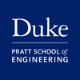
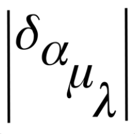
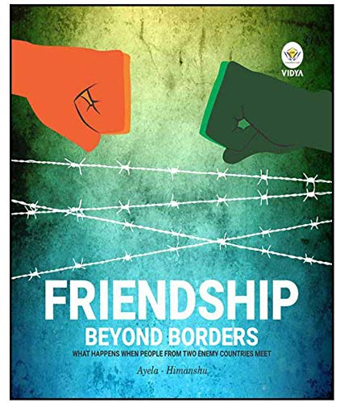

* Lab TA for the course ECE 110: Introduction to ECE * Helping a
group of 10 students in carrying out lab exercises with Op-Amps,
Voltmeters, Ammeters * Grading lab reports and holding office hours to
help students with the course material * Attended weekly meetings and
discussed ideas to make the lab better for the students * Office Hours
TA for ECE 250/CS 250: Computer Architecture * Grading exams and
helping students in their assignments during my office hours

* Part of the Applied Machine Learning Group at Duke University *
Working on Digital Fidget Project with other members of the Group in
collaboration with the Humans and Autonomy Lab * Working on a Data
Visualization Pipeline that takes different datasets and visualises
the data using different graphs for better understanding the data *
Group is working with different businesses in the Durham Area to help
them understand the data regarding their business and help them expand
to new areas * Working with the Woo Center on Analyte Data for
grouping different lab reports together on the basis of the test

* Met students from Pakistan for a science competition in India and
worked on a project with them * The similarities between us work
together and win the runners-up prize in the competition. I felt that
they were really different from how I had imagined them to be *
Co-authored a book that talks about these similarities between the two
nations and how these similarities should be leveraged upon to
overcome the hatred shared by both the nations * The book was endorsed
by the Ministry of Culture, Government of India and was sold on
Flipkart, Amazon etc. * More than 500 copies of the book were
sold